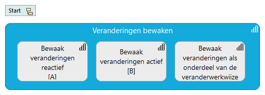

08 - Veranderingen bewaken
(
)

Zeggen dat er volgens de architectuur veranderd moet worden is doorgaans niet voldoende. Zonder bewakingsmechanisme zal de verleiding vaak te groot zijn om toch de weg van de minste weerstand te kiezen en de architectuur op punten te negeren.
Veranderingen bewaken
Bewaak veranderingen als onderdeel van de veranderwerkwijze
Veranderingen actief bewaken
Veranderingen reactief bewaken
Start
Bewaak veranderingen als onderdeel van de veranderwerkwijze
Veranderingen bewaken
Veranderingen actief bewaken
Veranderingen bewaken
Veranderingen reactief bewaken
Veranderingen bewaken